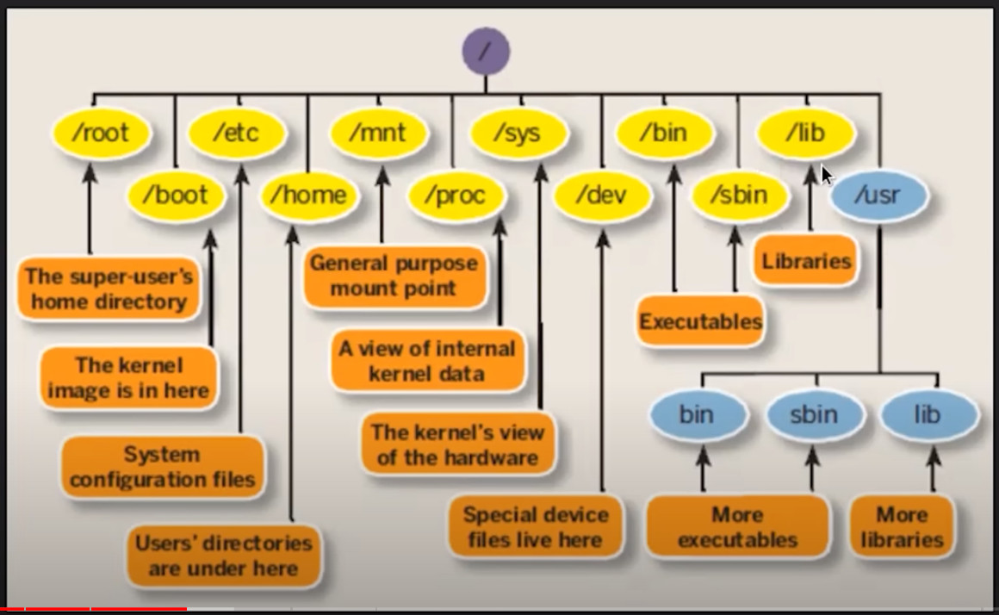

PowerShell Cheat-Sheet
PowerShell is a task automation and configuration management program from Microsoft, consisting of a command-line shell and the associated scripting language.
Install PowerShell
PowerShell was made open-source and cross-platform with PowerShell Core, and can be installed on multiple operating systems.
Windows
- Download MSI Package from the Official PowerShell Docs
- Set up PowerShell Profile in Windows Terminal ([[windows-terminal]]).
"commandline": "pwsh.exe -nologo",
"name": "Powershell",
"source": "Windows.Terminal.PowershellCore"
Linux (Ubuntu)
# Update the list of packages
sudo apt-get update
# Install pre-requisite packages.
sudo apt-get install -y wget apt-transport-https software-properties-common
# Download the Microsoft repository GPG keys
wget -q https://packages.microsoft.com/config/ubuntu/20.04/packages-microsoft-prod.deb
# Register the Microsoft repository GPG keys
sudo dpkg -i packages-microsoft-prod.deb
# Update the list of packages after we added packages.microsoft.com
sudo apt-get update
# Install PowerShell
sudo apt-get install -y powershell
# Start PowerShell
pwsh
Profile
Set up a PowerShell Profile by opening the profile script :
code $PROFILE
(Optional) Set up starship Prompt
You can customise the look and feel of PowerShell with the Starship Prompt ([[starship]]).
Run PowerShell script under python
## use powershell script in Python
import subprocess
def run_powershell_script(script_path):
completed_process = subprocess.run(["powershell", "-File", script_path], capture_output=True)
return completed_process
##using the decode method to decode the returned message
str = "this is string example....wow!!!";
str = str.encode('utf-8', 'strict');
print ("Encoded String: ", str)
str = str.decode('utf-8', 'strict')
print ("Decoded String: ", str)
PowerShell hashtable
https://learn.microsoft.com/en-us/powershell/scripting/learn/deep-dives/everything-about-arrays?view=powershell-5.1
See my About page for details.
At the same time you could see certutil
